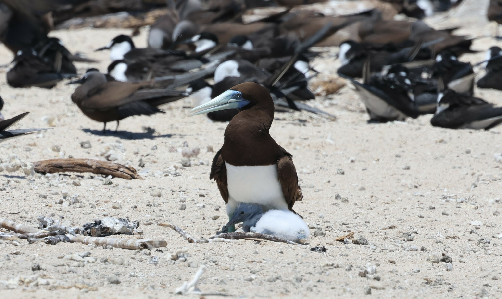

Sula leucogaster
صياد بحري ذو هوية محددة
الأطيش البني، Sula leucogaster، من فصيلة الأطيشيات، وطائر بحري قوي الطيران يتصل في المنطقة العربية بالبحر الأحمر وخليج عدن والجزر والمياه الدافئة للمحيط الهندي. لونه ليس بنيًا كاملًا: يحمل البالغ رأسًا وعنقًا وصدرًا علويًا وظهرًا بنية، تقابلها مساحة بيضاء واضحة على البطن. والمنقار قوي مدبب، والجناحان طويلان، والذيل متدرج ومدبب. هذا البناء يلائم طائرًا يبحث عن السمك من الجو ثم ينقض إلى الماء.
تغير نطاق الاسم في التصنيف الحديث. يفصل AviList 2026 أطيش كوكوس، Sula brewsteri، عن الأطيش البني، بعد أن كانت جماعات من شرق المحيط الهادئ تدخل تحت الاسم الأخير. أما طيور البحر الأحمر والمحيط الهندي فتنتمي ضمن الأطيش البني إلى السلالة plotus. لذلك لا يصح جمع كل صورة قديمة تحمل عبارة «Brown Booby» تحت النوع الحالي دون فحص أصلها؛ فالاسم في كتاب قديم قد يغطي مجموعة أوسع من الاسم نفسه اليوم.
البالغ واليافع والأنواع المشابهة
في البالغ تبدو الحدود بين الصدر البني والبطن الأبيض حادة نسبيًا، بينما يكون اليافع أكثر بنية في الأسفل وقد يحمل تبقعًا، فلا يظهر التباين نفسه. تبقى هيئة المنقار والجناحين والذيل مهمة عند تحديد الهوية. والأنثى أكبر في المتوسط من الذكر، لكن تقدير الجنس من الحجم وحده في طائر منفرد بعيد غير مأمون. كذلك تختلف ألوان الأجزاء العارية مع الجنس والحالة والعمر؛ لا يغني لون قدم أو بقعة وجه صغيرة عن النظر إلى الطائر كاملًا.
يستحق الأطيش المبرقع المقارنة في بحر العرب. بالغه أبيض واسع المساحة مع أجزاء داكنة في الجناحين والوجه، بعكس بالغ الأطيش البني ذي الرأس والصدر الداكنين. تصبح المقارنة أصعب مع اليافعين البنيين، وعندها تفيد صورة واضحة للجسم من الأسفل والرأس وشكل التباين بين العنق والبطن. لا ينبغي تحويل مشاهدة سريعة من قارب متحرك إلى سجل جازم إذا لم تظهر العلامات. يمكن حفظ السجل بوصفه أطيشًا غير محدد حتى تتوفر أدلة أفضل.
كيف يحصل على غذائه؟
يعتمد الأطيش البني على السمك والحبار، ويبحث فوق المياه الساحلية وحول الجزر، وقد يخرج إلى مياه أكثر انفتاحًا. يراقب السطح ثم ينقض برأسه بزاوية نحو الفريسة، ويمكنه تعديل طيرانه أو التحويم قبل الغطس. ويمزج بين الرفرفة والانزلاق، فيغطي مساحات واسعة دون أن يبقى مرتبطًا برقعة واحدة من الماء. لا تدل عودة طائر بلا سمكة ظاهرة في المنقار بالضرورة على فشل الصيد؛ فطعام الفراخ قد يُحمل داخل الجسم ثم يقدم بالقلس.
قد يتغذى منفردًا أو قرب طيور أخرى حين تتجمع الفرائس، ويستريح على الجزر والصخور أو المنشآت البحرية الملائمة. تربط حاجته إلى السمك بين حال البحر ونجاح العش: فالمستعمرة الهادئة لا تكفي إذا أصبح الغذاء بعيدًا أو غير متاح. كما لا تعني مشاهدته قرب قارب أنه أليف أو بحاجة إلى الإطعام. المحافظة على مسافة ثابتة تسمح بمراقبة البحث والانقضاض والعودة إلى موقع الراحة دون تغيير سلوكه.
العش والحضانة ورعاية الصغير
يختار موضعًا أرضيًا على جزيرة صخرية أو رملية، وقد يعشش على حافة صخرية أو في منخفض قليل البناء. يختلف مقدار ما يجمعه من نبات وحطام طبيعي باختلاف المكان، ولا يلزم أن يكون العش كبيرًا حتى يكون نشطًا. يشترك الزوج في الحضانة والرعاية. وتذكر المراجع عادة بيضة أو بيضتين، وقد ترد ثلاث نادرًا، مع حضانة تقارب ستة أسابيع؛ يورد المرجع العربي السعودي نحو 43 يومًا.
غالبًا لا يصل إلى الطيران سوى فرخ واحد حتى عندما تفقس بيضتان؛ فلا يساوي عدد البيض عدد الصغار التي ستغادر المستعمرة. ينمو الفرخ في الموقع، ويكتسب زغبًا أبيض قبل اكتمال الريش، ويحتاج إلى إمداد مستمر بالطعام. يضع المرجع السعودي عمر الطيران ضمن نحو 85–105 أيام، وتورد مراجع أوسع مدى أكبر مرتبطًا بالظروف. وتستمر التغذية بعد الطيران لأسابيع أو أشهر، فلا يعني مغادرة الأرض أن اليافع صار قادرًا فورًا على تلبية حاجته وحده.
حضوره في البلدان العربية
يوثق تقرير PERSGA لعام 2003 التكاثر في السعودية ومصر والسودان واليمن وجيبوتي والصومال. ويقع أرخبيل سقطرى اليمني ضمن نطاقه المتكاثر الذي يورده التصنيف العالمي الحديث. هذه الصلة بالمنطقة ليست قائمة على طائر شارد وحيد، لكنها لا تعني توزيعه بالتساوي على كل الشواطئ أو كل الجزر. كما أن أرقام التقرير القديم لا تصلح تعدادًا حاليًا؛ فمساحة المسح وتوقيته وطريقة عد الأعشاش تؤثر جميعًا في النتائج.
تعطي الدراسات السعودية صورة أكثر تفصيلًا. بحث منشور عام 2014 وثق التعشيش على جزر في شمال البحر الأحمر، بينما تناول بحث نشر عام 2025 مسوحًا أُجريت في 2011–2013 وأثبت مستعمرات إضافية في قطاعي الوجه والقنفذة. تاريخ نشر هذا البحث لا يجعل أعشاشه اكتشافًا ميدانيًا من عام 2025. أما في عُمان فتصفه قاعدة طيور عُمان زائرًا بحريًا غير شائع؛ لا ينبغي ترقيته إلى متكاثر محلي لمجرد أن النوع يعشش في اليمن القريب أو لأن أطيشًا آخر يعشش في جزر عُمانية.
موسم طويل لا يخضع لتقويم واحد
تختلف مواعيد التعشيش داخل البحر الأحمر نفسه. يبين بحث المسوح السعودية المنشور عام 2025 وجود فراخ في الشمال خلال مايو، مقابل أعشاش تحوي بيضًا في القطاع الأوسط خلال يوليو في سنوات المسح. كما ينقل دراسات أم القماري التي سجلت التعشيش في أنحاء السنة وذرى في أشهر مختلفة. لذلك لا يلائم النوع وصف بسيط بأنه زائر صيفي يغادر حتمًا في الخريف؛ بعض جماعاته مقيمة وتتغير حركة أفرادها بحسب التكاثر والغذاء.
في نوفمبر قد تستمر مشاهدة البالغين واليافعين في نطاقه البحري العربي، وقد تبقى رعاية صغار متأخرة قائمة في بعض المواقع. لكن لا يجوز إعلان نشاط عش في جزيرة محددة اعتمادًا على هذا الاحتمال العام. المطلوب مشاهدة السلوك من بعيد: حمل الطعام أو إطعام صغير أو حضور مستمر عند موضع عش، مع تسجيل التاريخ. وتفيد المتابعة المتكررة أكثر من تحويل زيارة واحدة إلى حكم على موسم الساحل بأكمله.
المخاطر وقيمة الجزر الهادئة
يتعرض الأطيش البني لضغوط في البر والبحر معًا: الإزعاج عند الأعشاش، والحيوانات الدخيلة، ومخلفات الصيد والتلوث وتغير موارد الغذاء. وقد وصفت الدراسة السعودية المنشورة عام 2025 مغادرة بالغين أعشاشهم عند اقتراب البشر، وما أعقب ذلك من انكشاف البيض للافتراس. هذه واقعة تربط الزيارة بنتيجة بيئية مباشرة. وحتى من لا يلمس بيضة أو فرخًا يمكنه الإضرار بالعش إذا أجبر الأب أو الأم على تركه في وقت حرج.
لا ينبغي نقل تقييم عالمي قديم يشمل أطيش كوكوس إلى النوع الحالي تلقائيًا بعد فصله تصنيفيًا. الأوضح عمليًا هو حماية المستعمرات المعروفة وقياس نجاح التكاثر والتهديدات في كل موقع. تبقى المراقبة خارج المستعمرة، ويمنع مطاردة الطائر بالقارب أو بالطائرة المسيّرة أو إطعامه للتصوير. وإذا شوهد فرد متشابك في معدات صيد، تُبلغ جهة إنقاذ مختصة بدل محاولة سحبه من مسافة أو تعريضه والناس للأذى. أمن الجزيرة وسلامة البحر شرطا استمرار هذا الغطاس البحري المميز.
الصورة: Don Wellmann / iNaturalist (CC0 1.0)